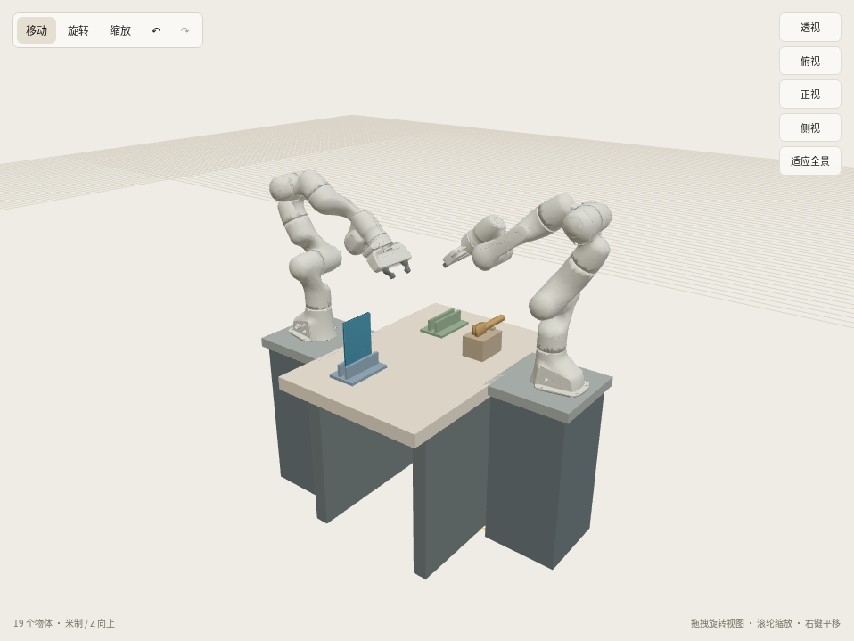
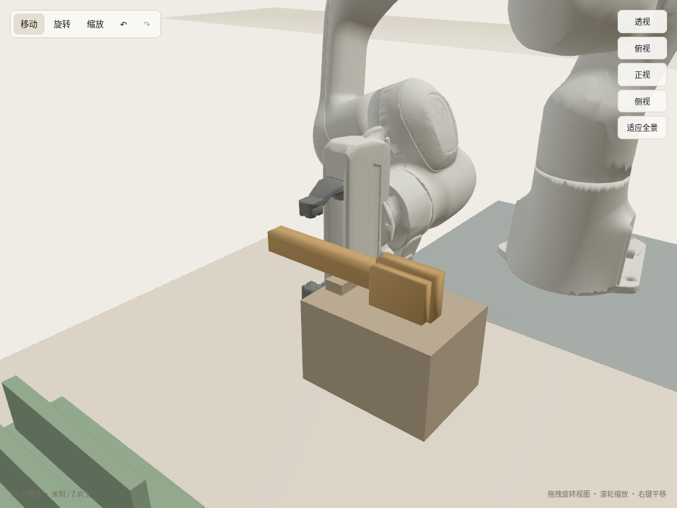

侧放刷托 · 场景候选
让刷子在托上就保持接近工作时的朝向：横向抓出，归还时保持方向直接放回，拟省掉原来的大角度转平和承托滚动。
刷子和抓点不变。仅把刷托改为侧放支撑，底托从 23×10×6 cm 改为 14×10×9 cm，并前移柄支撑，给下方夹爪留出空间。
这是待确认的固定场景候选。已完成可达与全开夹爪净空检查、实际 Studio 保存和重开、原生静置稳定检查；完整刷洗动作尚未执行，也没有新的提速版通过录像。
整体场景

横向抓取净空示意
真实 Panda 夹爪全开 80 mm 的 Studio 姿态示意，未执行抓取。

真实初始摆放录像（仅2秒，无任务动作）
原版完整任务已通过的录像仍保留在上方链接。提速实验的失败记录保留，不作为成功演示。